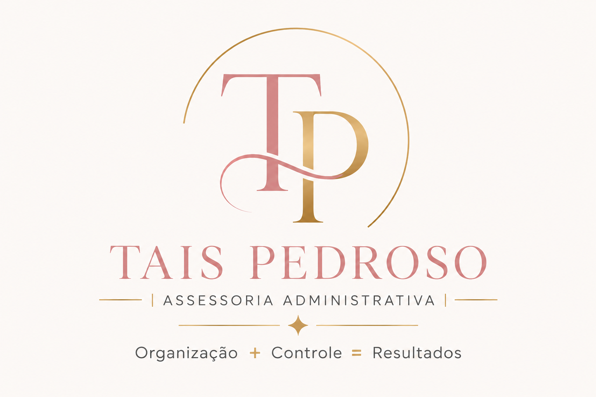

Organizar processos administrativos com eficiência, responsabilidade e transparência.
Organização administrativa para pequenas empresas
Transforme rotinas administrativas em clareza, controle e tempo.
Sua empresa continua focada em vender, atender e crescer. Eu organizo as rotinas administrativas, fiscais e documentais para que as informações estejam no lugar certo, no prazo certo.
01Atendimento
personalizado
personalizado
02Processos
padronizados
padronizados
03Informações
bem mastigadas
bem mastigadas
Organização + Controle = Resultados

Fechamento mensal
Organizado
✓
Documentos
Prontos para a contabilidade
Ideal para
Oficinas e autocenters
Prestadores de serviços
Comércios de pequeno porte
Empresas sem setor administrativo próprio
Sobre a TP Assessoria
Uma rotina organizada muda a forma como o empresário enxerga o próprio negócio.
A Tais Pedroso | Assessoria Administrativa nasceu para oferecer suporte operacional, organização documental e informações gerenciais claras para pequenas empresas.
O trabalho é construído com processos padronizados, prazos definidos e acompanhamento próximo. Cada documento é organizado para facilitar consultas, fechamentos e a comunicação com a contabilidade.
Ser referência em assessoria administrativa para pequenas empresas.
Organização, confiança, clareza, compromisso e eficiência.
O que fazemos
Serviços pensados para tirar a administração do improviso.
O escopo é ajustado ao volume e à complexidade da operação. Assim, a empresa contrata o suporte que realmente precisa, sem assumir uma estrutura interna maior do que o necessário.
01
Gestão de faturamento
Emissão de notas fiscais de venda de mercadorias e prestação de serviços com base nas informações enviadas.
- Notas de venda
- Notas de serviço
- Cancelamentos e correções, quando aplicáveis
02
Organização documental
Estrutura mensal de arquivos para que documentos fiscais sejam encontrados rapidamente e enviados com segurança.
- PDFs, XMLs e DANFEs
- Notas de venda, serviço e compra
- Pastas padronizadas por competência
03
Fechamento mensal
Conferência e consolidação das informações do período antes do envio para a contabilidade.
- Relatório de entradas
- Relatório de saídas
- Checklist de fechamento
04
Relatório gerencial
Informações resumidas e apresentadas de forma clara para facilitar o acompanhamento mensal do negócio.
- Recebimentos por modalidade
- Ticket médio
- Compras por fornecedor
05
Suporte à contabilidade
Preparação e envio da pasta mensal com os documentos e relatórios definidos no escopo contratado.
- Pasta compactada e conferida
- Comunicação organizada
- Acesso ao Bling, quando necessário
06
Estoque e inventário
Apoio semestral ao inventário, com organização da contagem e lançamento dos ajustes informados pelo cliente.
- Planejamento do inventário
- Registro das divergências
- Ajustes no sistema contratado
Método de trabalho
Um processo organizado do primeiro contato ao fechamento mensal.
A TP Assessoria trabalha com procedimentos documentados, checklists e etapas de conferência. Isso reduz esquecimentos, facilita o acompanhamento e mantém a qualidade das entregas.
Entender o plano ideal →Diagnóstico e proposta
Entendimento da rotina, do volume e das necessidades antes da definição do escopo.
Onboarding e acessos
Cadastro, contrato, sistemas, pasta do cliente e alinhamento com a contabilidade.
Rotina operacional
Emissão, arquivamento, atualização dos controles e acompanhamento das pendências.
Fechamento e relatório
Conferência final, relatórios, entrega gerencial e envio da documentação à contabilidade.
Relatório Gerencial Mensal
Visão clara do período
COMPETÊNCIA 00/0000
34,9%compras
Comparativo entre recebimentos e investimento em peças.
Diferencial gerencial
Não basta guardar documentos. É preciso transformar os dados em informação útil.
O Relatório Gerencial Mensal organiza os principais números da empresa em uma leitura direta, sem linguagem complicada e sem depender de várias telas do sistema.
01Resumo executivoOs destaques do mês reunidos em poucos minutos de leitura.
02IndicadoresFormas de pagamento, ticket médio e comparativos do período.
03ComprasConsolidação dos valores investidos e separação por fornecedor.
Escopo transparente
Clareza também significa dizer exatamente o que faz parte do serviço.
A assessoria administrativa trabalha em conjunto com a contabilidade, mas não a substitui. Também não realiza movimentações bancárias ou pagamentos em nome do cliente.
- Rotinas descritas no plano contratado
- Organização dos documentos fiscais
- Relatórios e controles definidos
- Comunicação administrativa com a contabilidade
- Escrituração contábil, fiscal ou trabalhista
- Consultoria tributária ou jurídica
- Acesso bancário e realização de pagamentos
- Decisões fiscais sem orientação da contabilidade
Planos mensais
Uma solução proporcional à necessidade da sua empresa.
Os valores abaixo são referências iniciais. A proposta final considera volume de documentos, sistemas utilizados, frequência das demandas e complexidade da operação.
Essencial
Organização fiscal e documental
R$800/mês
- Emissão de notas fiscais
- Organização documental mensal
- Relatórios de entradas e saídas
- Envio organizado à contabilidade
Mais escolhido
Gerencial
Organização + indicadores mensais
R$950/mês
- Tudo do Plano Essencial
- Relatório Gerencial Mensal
- Recebimentos por modalidade
- Ticket médio e comparativos
- Compras por fornecedor
Empresarial
Operações com maior volume
R$1.200+ /mês
- Tudo do Plano Gerencial
- Maior volume de documentos
- Atendimento prioritário
- Suporte administrativo ampliado
- Escopo personalizado
O plano ideal é definido após uma conversa breve sobre a rotina da empresa.
Conheça o padrão de entrega
Uma apresentação profissional antes mesmo do início do contrato.
A proposta comercial descreve o escopo, os prazos, as responsabilidades e as condições de forma clara. O objetivo é que o cliente saiba exatamente o que será entregue.
TP
PROPOSTA COMERCIAL
Organização + Controle = Resultados
Material institucional
Proposta comercial modelo
Consulte um exemplo do padrão visual e da estrutura utilizada nas propostas.
Abrir documento ↗
Perguntas frequentes
Antes de contratar, é importante entender como o serviço funciona.
Estas são algumas das dúvidas mais comuns sobre prazos, responsabilidades e atendimento.
O serviço substitui a contabilidade?+
Não. A assessoria administrativa organiza e executa as rotinas contratadas, enquanto a contabilidade permanece responsável pela escrituração, apuração de tributos e orientação fiscal, contábil e trabalhista.
Qual é o prazo para emissão das notas?+
O prazo padrão é de até 2 dias úteis após o recebimento completo das informações necessárias, salvo condição específica definida na proposta.
Você acessa a conta bancária da empresa?+
Não. O escopo atual não inclui acesso bancário, realização de pagamentos, movimentação financeira ou conciliação bancária.
O atendimento pode ser totalmente online?+
Sim. A rotina pode ser conduzida online por meio dos sistemas e canais de comunicação definidos no onboarding. Atendimentos presenciais podem ser avaliados conforme a localização e a necessidade.
Os planos podem ser personalizados?+
Sim. O plano e o valor final são definidos conforme o volume de notas, documentos, sistemas utilizados e complexidade da operação.
Solicite uma avaliação
Sua empresa pode ser mais organizada sem precisar criar um setor administrativo inteiro.
Preencha as informações abaixo. Ao enviar, o WhatsApp será aberto com um resumo da sua necessidade para iniciarmos a conversa.